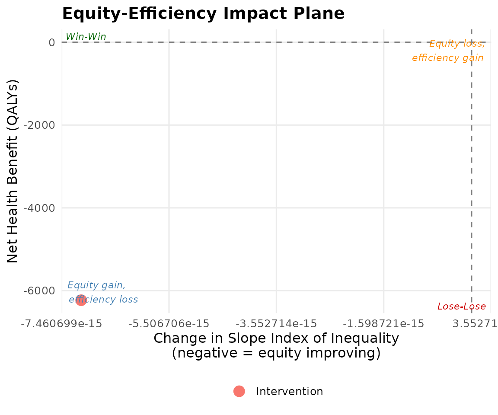

Introduction to Distributional Cost-Effectiveness Analysis
Source:vignettes/v01_introduction_to_dcea.Rmd
v01_introduction_to_dcea.RmdWhy standard CEA ignores equity
Standard cost-effectiveness analysis (CEA) answers one question: does this intervention generate more health per pound spent than the alternatives? It aggregates health across all patients as if a QALY gained by the most deprived person equals a QALY gained by the least deprived.
This approach is silent on who benefits — and therefore on how interventions affect health inequalities between socioeconomic groups.
The DCEA framework
Distributional Cost-Effectiveness Analysis (DCEA), developed by Cookson, Griffin, Norheim and Culyer (2020), extends standard CEA by:
- Distributing aggregate health gains across socioeconomic groups.
- Measuring the impact on health inequality (SII, Atkinson index, etc.).
- Evaluating the social welfare gain using inequality-aversion weights.
- Visualising the equity-efficiency trade-off on an impact plane.
When to use aggregate vs full-form DCEA
| Method | When to use | Data required |
|---|---|---|
| Aggregate DCEA | Standard TA; disease-level HES data available | ICER, incremental QALY/cost, disease ICD |
| Full-form DCEA | Subgroup trial data available; HST or exceptional case | Per-group QALY/cost estimates |
NICE (2025) recommends aggregate DCEA as the default supplementary analysis for technology appraisals where equity is relevant.
Quick start
result <- run_aggregate_dcea(
icer = 28000,
inc_qaly = 0.45,
inc_cost = 12600,
population_size = 12000,
wtp = 20000,
opportunity_cost_threshold = 13000
)
summary(result)
#> == Aggregate DCEA Result ==
#> ICER: £28,000 / QALY
#> Incremental QALY: 0.4500
#> Incremental cost: £12,600
#> Population size: 12,000
#> Net Health Benefit: -6230.77 QALYs
#> SII change: -0.0000
#> Decision: Trade-off: equity gain, efficiency loss
#>
#> -- Per-group results --
#> # A tibble: 5 × 4
#> group_label baseline_hale post_hale nhb
#> <chr> <dbl> <dbl> <dbl>
#> 1 Q1 (most deprived) 52.1 52.0 -1246.
#> 2 Q2 56.3 56.2 -1246.
#> 3 Q3 59.8 59.7 -1246.
#> 4 Q4 63.2 63.1 -1246.
#> 5 Q5 (least deprived) 66.8 66.7 -1246.
#>
#> -- Inequality impact --
#> # A tibble: 4 × 5
#> index pre post change pct_change
#> <chr> <dbl> <dbl> <dbl> <dbl>
#> 1 sii 18.2 18.2 -7.11e-15 -3.91e-14
#> 2 rii 0.304 0.305 5.31e- 4 1.74e- 1
#> 3 gini 0.0487 0.0488 8.49e- 5 1.74e- 1
#> 4 atkinson_1 0.00374 0.00376 1.32e- 5 3.52e- 1
plot_equity_impact_plane(result)
Key references
Cookson R, Griffin S, Norheim OF, Culyer AJ (2020). Distributional Cost-Effectiveness Analysis. Oxford University Press (ISBN:9780198838197).
NICE (2025). Technology Evaluation Methods: Health Inequalities (PMG36).
Love-Koh J et al. (2019). Value in Health 22(5): 518-526.